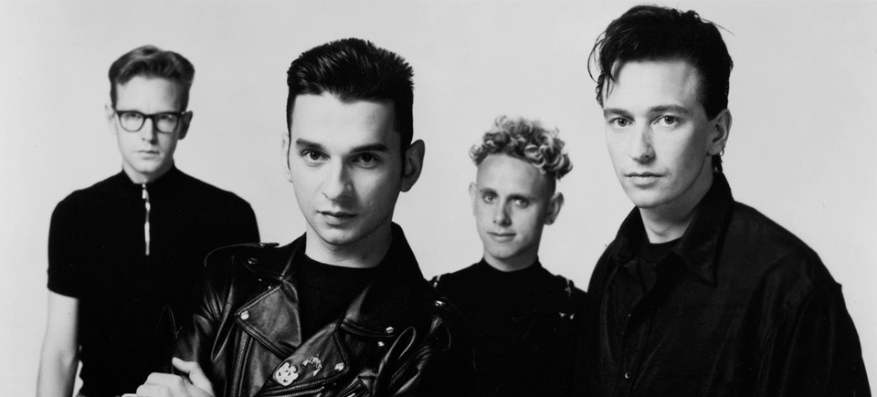

¡Bienvenidos!
A mi profesor de Lenguajes de Marcas, Pascu, le flipan los Pokémon. A mi, me flipa Depeche Mode, así que vamos a exponer Todo sobre Depeche Mode
Si quieres estar al día, te recomendamos visitar la página web oficial de www.depechemode.com
Pero si eres un friki como yo, la dmlive-wiki es la fuente de información infinita de la banda.
Si aún no sabes quienes son Depeche Mode...
